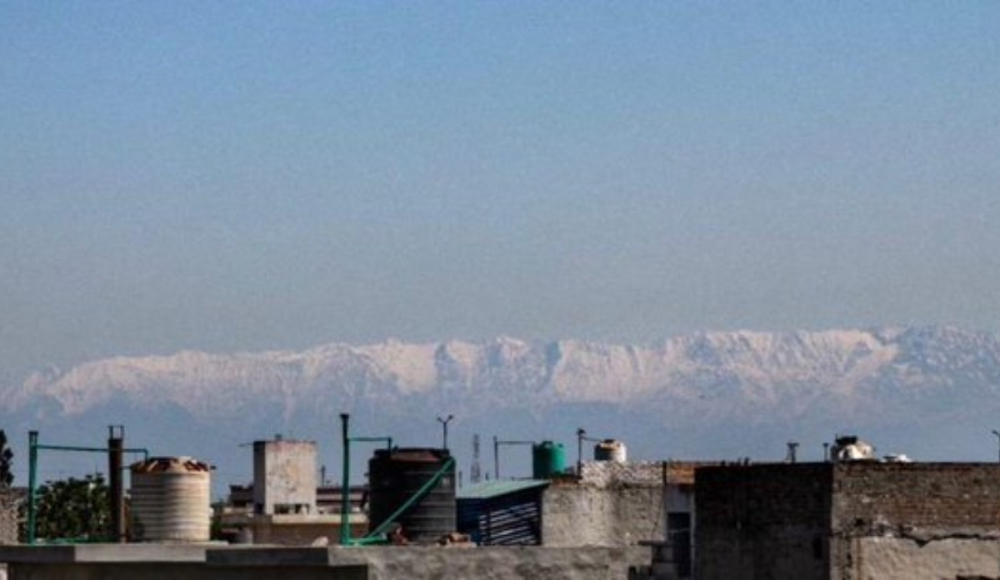
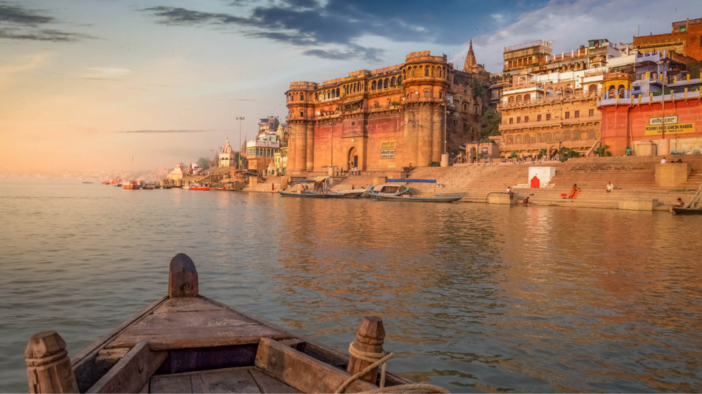

With humans indoors, PLANET HEALS itself
China, being the spot of inception of the COVID-19 contamination, is presently demonstrating an impressive decrease in their contamination levels."The decrease in air contamination in China brought about by this monetary interruption likely spared multiple times a bigger number of lives in China than have as of now been lost because of disease with the infection in that nation," says Professor Marshall Burke of Stanford University.  Not simply in China, vehicular development has ground to a halt over the world. Alongside this, the shutdown of processing plants and business foundations has brought about an extreme drop in the contamination levels in pretty much every nation. Delhi was regarded as the most dirtied capital on the planet starting a month ago with a PM2.5 focus as high as 161. Because of the lockdown, the AQI has decreased to 82 according to the most recent records, which falls under the 'acceptable' classification. The urban communities around Delhi have additionally observed a radical drop in the contamination levels. There has been an extraordinary decrease in the degrees of carbon monoxide and carbon dioxide. In Punjab, cleaner air isn't the main advantage of a drop in air contamination. Without precedent for a long time—actually the first run-through for some—inhabitants of Jalandhar could see the Dhauladhar run over 200km away, right in Himachal Pradesh. It was before in April that occupants were shocked dumb by the sheer excellence of the Himalayas, for quite a long time darkened behind brown haze from stubble consuming. In this way, while individuals are handling the COVID-19 infection, the shutdown has given the Earth a breather to recoup a piece from an Earth-wide temperature boost.
The lockdown has empowered numerous uncommon types of fauna to come out and shock numerous around the globe. Deer were seen strolling around in a town in Poland. Wild turkeys ruled a play area in California, US. Design capital, Paris, saw some wild pigs on its avenues. Olive Ridley turtles came aground on a seashore in Odisha. The presence of these creatures in all these human foundations gives us that genuine gatecrashers are people. In a web pattern, after one tweeter was prohibited for a dubious post, netizens tweeted about how these creatures are coming out of their stowing away, and holding with the earth indeed, in the silliest way. Some of them even tweeted about 'finding a dinosaur' in their patio. The entirety of this with a straightforward message – 'The earth is mending. We are the infection'. 
The river Ganga was once said to have the purest water which could be devoured directly from the source. Be that as it may, with the expanding human settlements, the stream saw a dunk in its quality. In any case, presently, in the midst of the lockdown, Ganga Pollution Control Board asserted that the water quality has improved in the course of recent weeks. The equivalent goes for the Yamuna that has seen a decrease in the fecal coliform levels during the lockdown. It is additionally at long last liberated from froth. In places like Venice, where the travel industry has seen a critical fall, the speedboats currently lay still on the generally cleaner conduits. Furthermore, discussing voyagers and the travel industry, the seas, which give very nearly 50 percent of the oxygen in the world's environment, presently swallow lesser amounts of single-use plastics.
Living in urban areas, the hints of normally moving traffic appeared our regular bedtime songs. With the lockdown set up, this commotion has been quelled naturally. The fowls are at last boisterous enough, the leaves are stirring, the crickets are back in real life, and the breeze is whistling through the entirety of this. The decrease in the clamor levels is likewise being recognized by seismologists. These researchers are announcing less seismic clamor, or vibrations, in the Earth's outside. For example, seismic commotion brought about by human movement in Brussels is accounted for to be somewhere around 33% contrasted with pre-lockdown levels. One advantage is that instruments to distinguish tremors and other seismic action can be increasingly exact. Scientists accept that the drop in the seismic commotion could be the consequence of the vehicle systems and human exercises being closed down. The Earth is briefly liberated from the clamor from the blares of the vehicles, and the firing up of motorbikes, which are likewise reasons for worry in people.
Regardless of the barbaric exercises by people, a few of us are as yet putting forth a valiant effort to offer back to the planet. To utilize the leisure time in their grasp, individuals are going to the nursery and doing little scope agrarian exercises. Individuals are likewise developing vegetables at home, in their overhangs, and patios, for their utilization. Homegrown produce is supposed to be more nutritious than the ones at the stores. While this may appear to be somewhat little, every plant contributes a modest quantity to a more prominent reason – the breath of life. The COVID-19 lockdown has guaranteed numerous lives all around yet has likewise made us watch the planet mend from behind out windows. While the lockdown lowers the harmfulness levels in the earth. With the quick felling of trees, deforestation, and misuse of nature, clearly a significant number of us have overlooked that people and nature are not genuinely separate from one another. Common life is presently compromised by people who think they are separated from it.